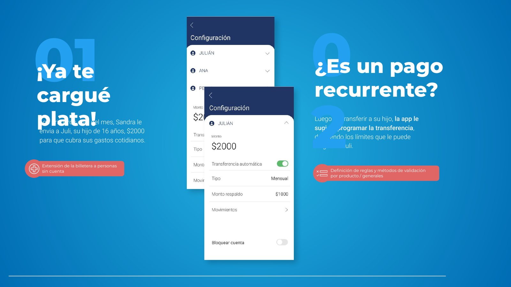
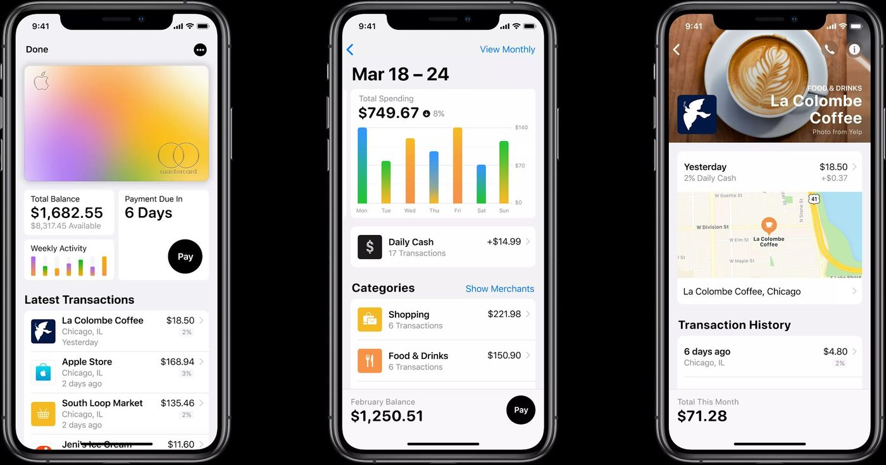
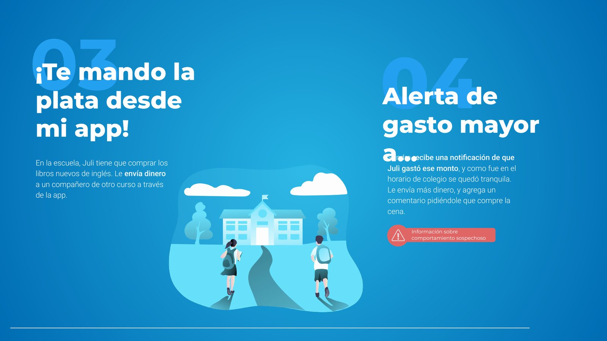
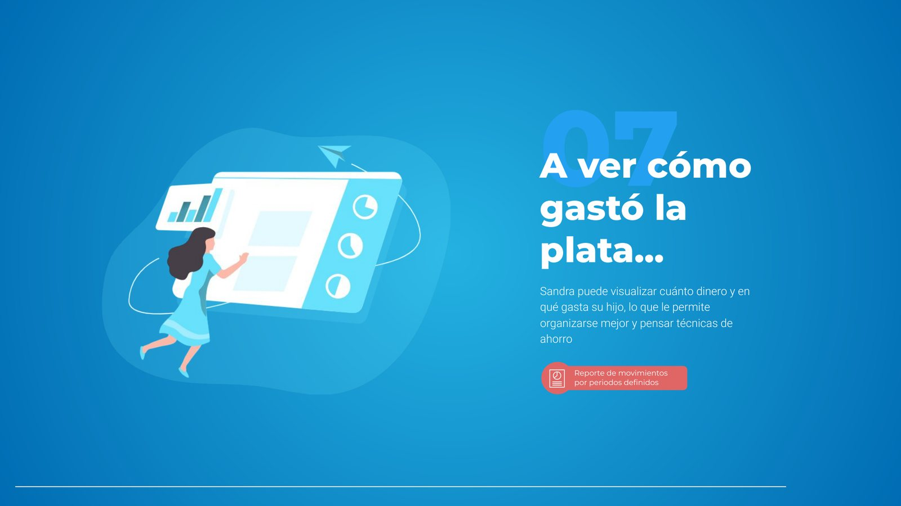

Envisioning de producto: Billetera Virtual
¿Cómo nos imaginamos una experiencia ideal? Construimos la visión de una Billetera Virtual para alinear expectativas sobre una gran oportunidad de uno de los bancos privados más grandes de Argentina.

El objetivo
La existencia de la billetera por sí misma no es el beneficio, el uso de ésta es lo que marca la diferencia.
Queríamos explorar la visión a futuro de la Billetera Virtual y su impacto en la vida de los clientes: qué valor podía agregar el producto y cómo incorporarlo al ecosistema que el banco ya había construido.
Cómo lo hicimos
Combinamos investigación de mercado (qué estaban haciendo las billeteras más relevantes del mundo) con un ciclo de co-creación junto al cliente, en workshops donde construimos la visión en conjunto.

De ese trabajo salieron tres premisas para el producto:
Brindar una experiencia personalizada
Fidelizar a nuestros clientes
Potenciar la App
La visión, contada como una historia
“Con la Billetera Virtual… puedo acompañar a mi familia.”
Para que la visión se entendiera en la vida real, la contamos a través de Sandra (48 años, abogada) y su hijo Julián (16 años, estudiante). Cada momento de su historia revela una capacidad del producto.


La recomendación
Vemos la necesidad de una experiencia unificada.
Una experiencia única, donde el usuario no perciba diferencias entre los módulos de la aplicación y la reconozca como un solo producto con distintas maneras de operar según sus necesidades.
La billetera deja de ser un módulo dentro de la aplicación y pasa a ser una manera de operar, alineada y unificada con todas las funcionalidades de Banca Móvil.
Lo que me llevo
Una historia alinea más que un roadmap
Contar la visión a través de Sandra y Juli hizo que todos imaginaran el mismo producto.
El valor está en el uso
Diseñar alrededor de momentos reales nos sacó de la lista de features.
De la visión al detalle
Quedarme en el desarrollo me permitió cuidar que la visión sobreviviera a la implementación.